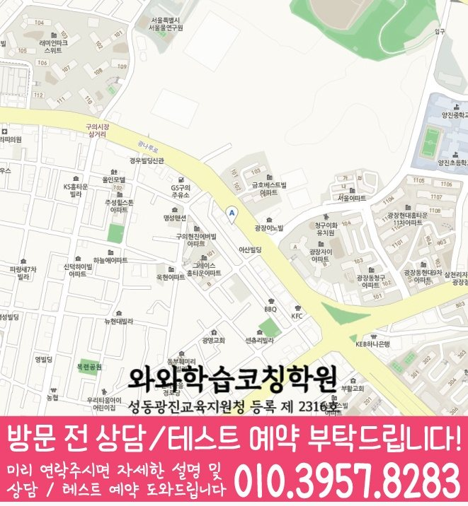

영어는 암기량보다 흐름 확인
파닉스 이후 단어, 문장 읽기, 짧은 글 이해, 기본 문법 감각을 차근차근 확인합니다.
ELEMENTARY ENGLISH & MATH
서울 광진구 구의동에서 초등 영어·수학 관리를 함께 고민하는 학생을 위해, 진단부터 플래너·오답 재학습까지 한 흐름으로 정리했습니다.
ENGLISH & MATH GUIDE
초등 과정은 진도를 빠르게 나가기보다, 아이가 혼자 공부를 시작할 수 있는 읽기·계산·문장제 습관을 만드는 것이 핵심입니다. 구의동에서 초등 영수학원을 알아볼 때는 과목별 진도보다 학생이 실제로 막히는 지점, 시험까지 남은 기간, 혼자 공부 가능한 시간을 먼저 확인하는 편이 좋습니다.

파닉스 이후 단어, 문장 읽기, 짧은 글 이해, 기본 문법 감각을 차근차근 확인합니다.
연산 정확도, 단원 개념, 문장제 이해, 풀이 과정을 말로 설명하는 힘을 함께 봅니다.
짧게 반복하는 학습 시간을 만들고, 숙제·복습·오답 확인을 부담 없이 이어가도록 조정합니다.

LOCAL STRATEGY
서울 광진구 구의동 주변에서 구의동 초등 영수학원을 찾는다면, 영어와 수학을 단순히 같은 시간표에 넣는 것보다 각 과목의 약점 원인을 따로 보고 다시 하나의 학습 계획으로 묶는 과정이 필요합니다.
ELEMENTARY COACHING POINT
영어 읽기 습관과 수학 기초력을 함께 키우는 초등 학습 루틴
LOCAL ACADEMY GUIDE
구의동 초등 학생에게 영수 관리는 영어와 수학을 같은 방식으로 반복시키는 일이 아닙니다. 영어는 읽기·암기·문법·서술형을, 수학은 개념·유형·풀이 과정·오답 원인을 따로 확인해야 합니다. 이후 두 과목을 하나의 주간 플래너 안에 넣어 실제 생활 리듬에 맞게 조정할 때 꾸준함이 생깁니다.
최근 시험과 과제 수행 기록을 보면 먼저 보완해야 할 과목이 보입니다. 이 순서를 정해야 무리한 양 늘리기를 피할 수 있습니다.
같은 유형을 다시 틀린다면 단순 복습보다 개념 설명, 풀이 과정 점검, 암기 방식 수정이 먼저 필요할 수 있습니다.
영어 단어·문법·독해와 수학 개념·유형·오답을 분리해 학생의 출발점을 확인합니다.
학교 일정, 숙제량, 시험 범위를 반영해 영어와 수학 시간을 균형 있게 배치합니다.
완료 여부만 체크하지 않고, 막힌 이유와 다시 볼 문제를 정리해 다음 계획에 반영합니다.
구의동 초등 영수학원 페이지는 서울 광진구 구의동 학생과 학부모가 영어·수학 학습 방향을 잡을 때 참고할 수 있도록 정리한 안내입니다. 실제 상담에서는 학생의 학년, 학교 진도, 최근 시험 결과, 공부 습관을 함께 확인해 더 구체적인 계획을 세웁니다.
주소
서울 광진구 광나루로 584 동서울빌딩 5
등록정보
와와학습코칭학원 · 성동광진교육지원청 등록 제 2316호
초등
중등
고등
DIRECT STUDY ANSWER
서울 광진구 구의동 초등학생의 학습 방향은 최근 결과와 공부 과정을 함께 봐야 정할 수 있습니다. 구의동 초등 영수학원 페이지에서는 최근 영어·수학 시험지, 과목별 공부 시간, 오답 기록을 바탕으로 과목별 약점·주간 분량·시험 우선순위·오답 재학습을 확인하는 기준을 설명합니다. 교과 진단형 안내이므로 최근 문항의 풀이 근거, 단원 연결, 평가 범위를 세분화해 보완 순서와 재확인 기준을 제시합니다. 결과는 문항별 오류 유형과 단원별 재학습 완료 여부로 확인합니다.
영어·수학의 개념·문항·평가 대비가 중심입니다. 초등학생의 전체 시간표보다 영어·수학에서 막힌 지점과 재학습 순서를 먼저 확인합니다. 다른 관점의 안내가 필요하면 구의동 초등학생 영어·수학학원도 함께 확인하세요.
VERIFIED CENTER CONTEXT
상담 전에는 최근 결과뿐 아니라 평소 공부 과정도 준비하는 것이 좋습니다. 혼자 시작하는 시간과 과제 마무리 기록을 최근 영어·수학 시험지, 과목별 공부 시간, 오답 기록과 함께 보면 과제량, 복습 간격, 재학습 시점을 더 구체적으로 정할 수 있습니다. 이번 상담 기준은 시험 직전에만 두 과목을 몰아서 공부해 평소 기록이 부족한 학생의 실제 기록을 와와학습코칭센터 광장점의 확인 자료와 연결해 판단하는 데 둡니다.
초등 영어·수학 교과 학습을 담당합니다. 영어·수학의 개념·문항·평가 대비가 중심입니다. 초등학생의 전체 시간표보다 영어·수학에서 막힌 지점과 재학습 순서를 먼저 확인합니다.
와와학습코칭센터 광장점 자료에서 초등 영어·수학 교과 학습 관련 학년은 초4·초5·초6 범위로 확인됩니다. 실제 반 편성과 현재 모집 가능 여부는 상담 시점에 다시 확인합니다.
와와학습코칭센터 광장점 자료에 참고 학교가 별도로 기재되지 않았습니다. 실제 재학 학교와 교재, 시험 범위는 상담에서 확인합니다.
위치 안내 자료에는 다음 내용이 기재되어 있습니다: 올림픽대교북단사거리 바로 앞, 광진구 광나루로 584 동서울빌딩5층. 방문 전에는 상담을 통해 운영 여부와 시간을 확인하세요.
구의동 초등 영수학원 상담에서는 최근 영어·수학 시험지, 과목별 공부 시간, 오답 기록과 학교 진도와 기초 이해 상태를 먼저 확인한 뒤 과목별 약점·주간 분량·시험 우선순위·오답 재학습의 우선순위를 정합니다.
PERSONALIZED CHECKLIST
와와학습코칭센터 광장점 상담 자료로 활용할 수 있도록, 점수만 보지 않고 최근 영어·수학 시험지, 과목별 공부 시간, 오답 기록에 남은 풀이 과정과 복습 흔적을 확인합니다.
센터 자료에 참고 학교가 없으므로 재학 학교 일정을 직접 확인한 뒤, 학교 숙제와 학기 학습 일정을 달력에 표시하고 준비 기간을 주간 단위로 나눕니다.
관련 학년(초4·초5·초6) 안에서도 학생별 차이가 있으므로, 최근 일주일 기록에서 시험 직전에만 두 과목을 몰아서 공부해 평소 기록이 부족한 학생의 징후가 반복되는지 살펴봅니다.
초등 영어·수학 교과 학습 상담의 다음 확인 항목으로, 다음 점검에서는 취약 과목을 보완하면서 다른 과목의 복습 주기도 유지되는지를 확인해 계획의 효과를 평가합니다.
PARENT REVIEW
구의동 초등 영수학원 상담 과정에서 학부모가 자주 확인한 관리 기준과 후기를 정리했습니다.
구의동 초등 영수학원 상담에서 영어와 수학 중 어디를 먼저 잡아야 할지 기준이 생겨서 좋았습니다.
학부모다니는 것에 잘 적응하고 있어 재등록할 예정입니다.
학부모출결 상황을 꼼꼼하게 확인해 주셔서 믿음이 갑니다.
학부모아이가 다닌 뒤 성적이 눈에 띄게 향상되었습니다.
학부모다니기 전보다 문제를 푸는 속도가 빨라졌습니다.
학부모오답 노트를 활용해 취약한 부분을 반복해서 공부하게 해주십니다.
학부모FAQ
영수학원 상담 전 많이 묻는 내용을 정리했습니다.
최근 영어·수학 시험지, 과목별 공부 시간, 오답 기록과 학교 진도와 기초 이해 상태를 먼저 확인합니다. 이후 과목별 약점·주간 분량·시험 우선순위·오답 재학습을 구분해 학생이 지금 시작할 수 있는 순서와 분량을 정합니다. 와와학습코칭센터 광장점 상담에서는 특히 시험 직전에만 두 과목을 몰아서 공부해 평소 기록이 부족한 학생인지 실제 기록으로 확인합니다.
시험지와 교재 외에도 실제 공부 시간과 과제 완료 기록을 함께 알려주세요. 이 페이지에서는 특히 최근 영어·수학 시험지, 과목별 공부 시간, 오답 기록을 확인 자료로 활용합니다. 구의동 초등 영수학원 범위에서는 학교 숙제와 학기 학습 일정을 함께 알려주면 우선순위를 더 구체적으로 정할 수 있습니다.
구의동 초등 영수학원은 초등 영어·수학 교과 학습을 중심으로 설명합니다. 영어·수학의 개념·문항·평가 대비가 중심입니다. 초등학생의 전체 시간표보다 영어·수학에서 막힌 지점과 재학습 순서를 먼저 확인합니다. 두 페이지는 같은 학생을 다루더라도 상담에서 먼저 확인하는 기준이 다릅니다.
와와학습코칭센터 광장점 자료에서 초등 영어·수학 교과 학습 관련 학년은 초4·초5·초6 범위로 확인됩니다. 다만 실제 반 편성과 모집 가능 여부는 상담 시점에 다시 확인해야 합니다. 구의동 초등 영수학원 상담에서는 시험 직전에만 두 과목을 몰아서 공부해 평소 기록이 부족한 학생인지도 함께 살펴봅니다.
와와학습코칭센터 광장점 자료에는 참고 학교가 별도로 기재되지 않았습니다. 초등학생의 학교 숙제와 학기 학습 일정과 최근 영어·수학 시험지, 과목별 공부 시간, 오답 기록을 함께 준비하면 초등 영어·수학 교과 학습 상담 기준을 구체적으로 정할 수 있습니다.
센터 주소는 서울 광진구 광나루로 584 동서울빌딩 5입니다. 위치 안내 자료에는 다음 내용이 기재되어 있습니다: 올림픽대교북단사거리 바로 앞, 광진구 광나루로 584 동서울빌딩5층. 방문 전 운영 여부와 시간, 초등 영어·수학 교과 학습 상담 가능 여부를 함께 확인하는 것이 좋습니다.
SAME LOCAL PAGE
구의동 지역의 과목별·학년별 페이지 23개를 목적별로 묶었습니다. 필요한 조합을 펼쳐서 바로 이동해보세요.
ENGLISH & MATH CONSULTING
영어는 어휘·문법·독해, 수학은 개념·유형·오답을 한 주 학습계획 안에서 균형 있게 확인합니다.